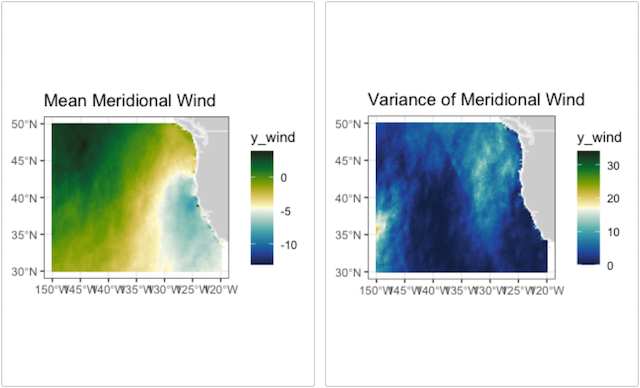
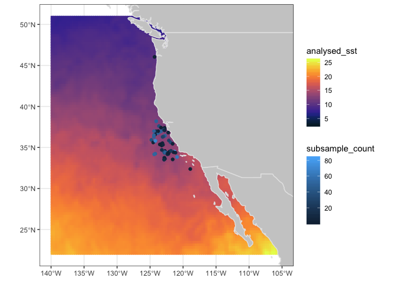

plotdap
The R package plotdap makes it easy to visualize
‘tabledap’ and ‘griddap’ objects obtained via the rerddap
package. Maps can be made using either base or ggplot2 graphics, and the
user does not need to know the intricacies of obtaining continental
outlines, projections, and combining those with the data to form maps.
Animations of the data are also readily obtained. plotdap
works in a similar fashion with either tables or grids return by
rerddap further simplifying the mapping process.
A user who desires fine control of their maps should learn how to map
the data themselves - some examples are give in the rerddap
vignette. But plotdap provides a simplified workflow of
obtaining data using rerddap and quickly and simply mapping
the data. In what follows we go over how to install plotdap
and it’s basic usage, as well as how to utilize some of the more
important options in the package in order to improve the map.
Installation
plotdap can be installed from CRAN with:
install.packages("plotdap")and the development version can be installed with:
devtools::install_github('ropensci/plotdap')Getting started with plotdap()
The plotdap() function makes it easy to visualize data
acquired via rerddap::tabledap() or
rerddap::griddap(). Regardless of the data you want to
visualize, you’ll always want to start a plot via
plotdap(), where you may specify some “global” plotting
options. Subsequent sections will demonstrate how to add tables/grids
via add_tabledap()/add_griddap(), but for now
we’ll focus on options provided by plotdap(). Most
importantly, the first argument decides whether base ‘R’ graphics or ggplot2 graphics
should be used for the actual plotting.

plotdap("base")
In addition to choosing a plotting method, plotdap() is
where you can define properties of the background map, including the
target projection using a valid coordinate reference system (CRS)
definition. Projection is performed using the PROJ.4 library, and spatialreference.org is a
great resource for finding PROJ.4 CRS descriptions. Using the search
utility, you can for example, search
for “South Pole” and pick from a number of options. Here I’ve chosen
the MODIS South
Pole Stereographic option and copy-pasted the Proj4
page with the CRS definition:
plotdap("base",
mapTitle = "MODIS South Pole Stereographic",
mapFill = "transparent",
mapColor = "steelblue",
crs = "+proj=stere +lat_0=-90 +lat_ts=-90 +lon_0=-63 +k=1 +x_0=0 +y_0=0 +ellps=WGS84 +datum=WGS84 +units=m +no_defs"
)
You might notice that some projections aren’t “well-defined” on a global scale, and thus, may result in an error, or a “broken” looking map. For instance, this Albers projection centered on Alaska:
alaska <- "+proj=aea +lat_1=55 +lat_2=65 +lat_0=50 +lon_0=-154 +x_0=0 +y_0=0 +ellps=GRS80 +towgs84=0,0,0,0,0,0,0 +units=m +no_defs"
plotdap("base", crs = alaska)
That does not mean we can’t use this (or similar) projections – we
just have to be careful that they are sensible given the lat/lon limits.
By default, those limits span the entire world, but as we’ll see later,
the limits are shrunk to the given data (i.e., griddap() /
tabledap()) limits. In other words, we should expect this
projection to work once we “add” some data located near Alaska to the
visualization. However, in case you want to make a map without any data,
or want to customize the background map in some special way, you can
supply an sf
object (or something coercable to an sf object) to the
mapData argument.
library(sf)
#> Linking to GEOS 3.11.0, GDAL 3.5.3, PROJ 9.1.0; sf_use_s2() is TRUE
library(mapdata)
w <- st_as_sf(maps::map("world", plot = FALSE, fill = TRUE))
us <- st_transform(subset(w, ID == "USA"), alaska)
plotdap(mapData = us)
With the odd exception of window sizing and projections, the options
in plotdap() should just work in a similar way for
either plotting method. However, there are some useful options that are
deliberately left out, since they work differently based on the plotting
method.
The mapData argument can be used to change the
resolution of the continental outlines or to limit the outline to a
pre-selected area, which can speed up processing because fewer unused
polygons need to be clipped. This is particularly important for maps
that will cross the dateline. So for example to use the hi-res outlines
for VIIIRS SST off the coast of North America:
sstInfo <- rerddap::info('erdVHsstaWS3day')
# get latest 3-day composite sst
viirsSST <- rerddap::griddap(sstInfo,
latitude = c(41., 31.),
longitude = c(-128., -115),
time = c('last','last'),
fields = 'sst')
w <- map("worldHires", xlim = c(-140., -114), ylim = c(30., 42.),
fill = TRUE, plot = FALSE)
# map using that outline, temperature color from cmocean
add_griddap(plotdap(mapData = w), viirsSST, ~sst, fill = "thermal" )
Maps that cross the dateline work better using the “world2” or
“world2Hires” databases frpm the mapdata package. There is
a known problem with that continental database in that polygons from
certain countries cause artificial lines in the map, and must removed,
as done below.
xpos <- c(135.25, 240.25)
ypos <- c(20.25, 60.25)
zpos <- c(70.02, 70.02)
remove <- c("UK:Great Britain", "France", "Spain", "Algeria", "Mali", "
Burkina Faso", "Ghana", "Togo")
#subset world2Hires with those countries removed
w <- map("world2Hires", plot = FALSE, fill = TRUE, ylim = ypos, xlim = xpos)
w <- map("world2Hires", regions = w$names[!(w$names %in% remove)],
plot = FALSE, fill = TRUE, ylim = ypos, xlim = xpos)
# plot result
plotdap(mapData = w)
Since the result of plotdap() is always a map, it always
forces a fixed aspect ratio (i.e., \(\frac{height}{width}\) of graph equals
\(r=\frac{latitude}{longitude}\)). For
this reason, the current size of your graphics device may not be
sensible for the value of \(r\) (for
instance, if \(r\) is high, but the
height of the graphics device is small, you may see an error such as:
polygon edge not found since the device cannot possibly
render the result under the conditions). For a number of reasons,
plotdap() will not automatically resize your graphics
device; instead, it’s recommended that you use a reliable graphics
device such as Cairo, and use a height/width ratio close to \(r\).
# write plot to disk using the Cairo package
library(Cairo)
# (latitude limits) / (longitude limits)
r <- 85 / 120
CairoPNG("myPlot.png", height = 400 * r, width = 400, res = 96)
# alter default margins for base plotting
# (leaving just enough space for a title)
par(mar = c(0, 0, 1, 0))
plotdap("base", mapData = us, mapTitle = "Albers projection of Alaska")
dev.off()More advanced users that know some base/ggplot2 plotting may want
more control of certain aspects of the plot (a later section –
Customizing plotdap() objects – covers this topic).
Adding tabledap() layers
The add_tabledap() function allows you to add markers
that encode variable(s) obtained via tabledap() to an
existing plotdap() object. For example, suppose we have the
following sardines data, and wish to understand the
frequency of subsample counts:
my_url <- 'https://coastwatch.pfeg.noaa.gov/erddap/'
sardines <- tabledap(
'FRDCPSTrawlLHHaulCatch',
fields = c('latitude', 'longitude', 'time', 'scientific_name',
'subsample_count'),
'time>=2010-01-01', 'time<=2012-01-01', 'scientific_name="Sardinops sagax"',
url = my_url)At the very least, add_tabledap() needs a base map
(i.e., a plotdap() object), the tabledap()
data, and a formula defining the variable of interest (for
encoding the color of the markers). In R, you can create a formula by
prefixing ~ to some expression. This formula can simply
reference a variable already residing in the dataset (e.g.,
~subsample_count) or it can be a function of some variables
(e.g. ~log2(subsample_count)):
p1 <- add_tabledap(
plotdap(crs = "+proj=robin", mapTitle = "subsample count"),
sardines,
~subsample_count
)
p2 <- add_tabledap(
plotdap(crs = "+proj=robin", mapTitle = "Log subsample count"),
sardines,
~log2(subsample_count)
)
p1
p2
Modifying tabledap() layers
It is also easy to alter the color scale as well as the symbol type
and size in add_tabledap() via the color,
shape and size arguments.
p1 <- add_tabledap(
plotdap(crs = "+proj=robin", mapTitle = "Sardines - change color"),
sardines,
~subsample_count,
color = "dense",
)
p2 <- add_tabledap(
plotdap(crs = "+proj=robin", mapTitle = "Sardines - change shape and size"),
sardines,
~subsample_count,
shape = 4,
size = 1.
)
p1
p2
For further details about these arguments, please refer to the
documentation on help(add_tabledap).
Adding griddap() layers
Similar to add_tabledap(), the
add_griddap() function makes it easy to add rasters (i.e.,
rectangular tiles) to a plotdap() object. To demonstrate,
lets obtain some of the latest sea surface temperatures along the
western coast of the US.
murSST_west <- griddap(
'jplMURSST41',
latitude = c(22, 51),
longitude = c(-140, -105),
time = c('last', 'last'),
fields = 'analysed_sst'
)Again, similar to add_tabledap(),
add_griddap() needs a base map (i.e., a
plotdap() object), the griddap() data, and a
formula defining the variable of interest (for encoding the
fill of the rectangles). The add_griddap() function also
has a maxpixels argument which sets a maximum threshold for
the number of cells (i.e., pixels) to use before projection and plotting
occurs. Compared to ggplot2, base plotting is much more efficient at
rendering raster objects, so it might be worth increasing the threshold
in that case:
add_griddap(
plotdap(crs = "+proj=robin"),
murSST_west,
~analysed_sst,
maxpixels = 50000
)
The murSST_west grid has a single time point (i.e.,
length(unique(murSST_west$data$time)) == 1), but what do we
do when there are multiple time points? In addition to animating
multiple grids (a la add_tabledap()), you also have the
option to summarize multiple grids into a single grid. To demonstrate,
lets grab some wind speeds measured along the west coast of the US.
wind <- griddap(
'erdQMwindmday',
time = c('2016-04-16', '2016-06-16'),
latitude = c(30, 50),
longitude = c(210, 240),
fields = 'y_wind'
)When faced with multiple time periods, and
animate = FALSE (the default), the time
argument is used to reduce multiple grids (i.e., raster bricks) to a
single grid (i.e., a single raster layer). You can pass any R function
to the time argument, but when
animate = FALSE, you should take care to ensure the
function returns a single value. The default uses the
mean(na.rm = TRUE) function so that each cell represents
the average (in this case amongst three time points), but we could
easily set this to var() to get the variance for each
cell:
p1 <- add_griddap(
plotdap(mapTitle = "Mean Meridional Wind"),
wind,
~y_wind,
fill = "delta",
time = mean
)
my_func <- function(x) var(x, na.rm = TRUE)
p2 <- add_griddap(
plotdap(mapTitle = "Variance of Meridional Wind"),
wind,
~y_wind,
fill = "delta",
time = my_func
)
p1
p2
Changing the layer order
By default, add_griddap plots the land first and then
the grid on top of that. For many uses that is desirable, but at other
times it is more desirable to have the land mask the grid. This can now
be done in the print method, by saving the plotdap object
and printing with the option “landmask = TRUE”.
plotdap(mapTitle = "Grid over Land") %>%
add_griddap(
viirsSST,
~sst,
fill = "thermal"
)
and compare when land is plotted over the grid:
plotdap(mapTitle = "Land Over Grid") %>%
add_griddap(
viirsSST,
~sst,
fill = "thermal"
) %>%
print(landmask = TRUE)
maxpixels
Images of satellite data can contain a large number of pixels.
add_griddap() allows for a differing number of pixels to be
used (default is 10,000) by setting the parameter “maxpixels”. When the
actual number pixels is larger than the value of “maxpixels”, the image
is sub-sampled. This can greatly affect the how the image looks.
plotdap(mapTitle = "maxpixels = 10,000") %>%
add_griddap(
viirsSST,
~sst,
fill = "thermal",
maxpixels = 10000
)
plotdap(mapTitle = "maxpixels = 50,000") %>%
add_griddap(
viirsSST,
~sst,
fill = "thermal",
maxpixels = 50000
)
plotdap(mapTitle = "maxpixels = 100,000") %>%
add_griddap(
viirsSST,
~sst,
fill = "thermal",
maxpixels = 100000
)The increased resolution can really make a difference when the land masks the grid:
plotdap(mapTitle = "maxpixels = 100,000, landmask") %>%
add_griddap(
viirsSST,
~sst,
fill = "thermal",
maxpixels = 100000
) %>%
print(landmask = TRUE)
Working with other continental outlines
My default, plotdap() uses the global “world” database
from the map package, and then trims the polygons based on
the limit of the map. Higher resolution coastlines or coastlines that
cross the dateline require can be used in plotdap()by
passing this information in the function call. Similarly, computations
can be sped up by pre-selecting the area of the coastline database
before calling plotdap().
To map the VIIRS SST data from the previous section using a subsetted, high-resolution continental outline, first the subset is defined for the high-resolution database:
and then plotted, with the landmask option:
plotdap(mapData = w) %>%
add_griddap(
viirsSST,
~sst,
fill = 'thermal',
maxpixels = 50000
) %>%
print(landmask = TRUE)
The “Simple Ocean Data Assimilation (SODA)” model (see https://www2.atmos.umd.edu/~ocean/) reconstructs the
historical physical history of the ocean since the beginning of the 20th
century. Here is the temperature at 70m depth for December 2015 for the
North Pacific Ocean, as an example of using plotdap() when
the data cross the dateline:
First, get the SODA data:
soda70Info <- rerddap::info('erdSoda331oceanmday')
xpos <- c(135.25, 240.25)
ypos <- c(20.25, 60.25)
zpos <- c(70.02, 70.02)
tpos <- c('2010-12-15', '2010-12-15')
soda70 <- rerddap::griddap(soda70Info,
longitude = xpos,
latitude = ypos,
time = tpos,
depth = zpos,
fields = 'temp' )then plot with plotdap
remove <- c("UK:Great Britain", "France", "Spain", "Algeria", "Mali",
"Burkina Faso", "Ghana", "Togo")
#subset world2Hires with those countries removed
w <- map("mapdata::world2Hires", plot = FALSE, fill = TRUE,
ylim = ypos, xlim = xpos)
w <- map("mapdata::world2Hires", regions = w$names[!(w$names %in% remove)],
plot = FALSE, fill = TRUE, ylim = ypos, xlim = xpos)
# plot result
plotdap(mapData = w) %>%
add_griddap(
soda70,
~temp,
fill = "thermal"
) %>%
print(landmask = TRUE) 
Combining tables/grids
The plotdap() interface is designed so that you can plot
both tables and grids at once (although I don’t recommend trying to plot
more than one griddap() or tabledap() object
at once). It’s also designed to work well with the %>%
operator from the magrittr package so that code can be
expressed in a left-to-right (rather than inside-out) fashion:
p <- add_griddap(plotdap(),
murSST_west,
~analysed_sst,
fill = "thermal"
)
p1 <- add_tabledap(p,
sardines,
~subsample_count
)
print(p1, landmask = TRUE)
Modifying ggplotdap objects
By this point, you might have noticed some subtle differences in the
defaults of plotdap("ggplot2") versus
plotdap("base"). The default base version is intentionally
left minimal as it is often much harder (or impossible) to modify/remove
elements from a base graphic once it’s drawn. However, this is fairly
easy using the ggplot2 approach (assuming you know a
bit of ggplot2), thanks to the
add_ggplot() function (think of it like the +
operator in ggplot2).
library(ggplot2)
plotdap(crs = "+proj=robin") %>%
add_tabledap(
sardines,
~subsample_count,
size = 1
) %>%
add_ggplot(
labs(
subtitle = "Sardinops sagax samples",
caption = "Sardines are yummy"
),
theme_minimal(),
theme(axis.ticks = element_blank(), axis.text = element_blank())
)
Similarly, VIIRS SST plot in the previous section, detail is lost due to high values observed in landlocked water. To modify that plot:
temp_color <- rerddap::colors$temperature
plotdap(mapTitle = "Reset colorscale limits") %>%
add_griddap(
viirsSST,
~sst,
fill = "thermal"
) %>%
add_ggplot(
scale_fill_gradientn(colours = temp_color, na.value = NA, limits = c(10, 20)),
scale_colour_gradientn(colors = temp_color, na.value = NA, limits = c(10, 20)),
guides(colour = FALSE)
) %>%
print(landmask = TRUE)Animating plotdap objects
Since time is an important variable in many
tabledap() and griddap() objects, both
functions have an animate argument which will animate the
maps over the time variable. The animations only work for
the ggplot2 option, and are based on the latest version of
gganimate.
gganimate is a very powerful package, and many of the
options available are designed to allow for “tweening”, that is for
smooth animation between frames. Unfortunately for complex maps with
many features, that can lead to very large animations that can take
hours to render. For this reason, all plotdap animations
use gganimate::transition_manual so that there is one frame
for each time period, and no “tweening” between frames. The animation
can be controlled by saving the animation to an object, and then
displaying the saved object using gganimate::animate() to
control the display. The
Since time is an important variable in many
tabledap() objects, add_tabledap() also has a
animate argument which allows you to easily animate over
the time variable. It is also easy to alter the color scale
and symbol type via the color and shape
arguments. For details about these arguments, please refer to the
documentation on help(add_tabledap)
add_tabledap(
plotdap(crs = "+proj=robin"),
sardines,
~subsample_count,
color = "dense",
shape = 4,
animate = TRUE
)
If you just want to animate the raw grid values over time (instead of
computing summary statistic(s) for each cell), you can set
time to the identity function, then set
animate = TRUE:
add_griddap(
plotdap(crs = "+proj=robin"),
wind, ~y_wind,
time = identity,
fill = 'delta',
animate = TRUE
) The frames per second
and the total number of frames for an animated
The frames per second
and the total number of frames for an animated plotdap
object p can be controlled calling
gganimate::animate(p$ggplot, ...) with the desired other
settings. Unfortunately, the map bounding box set in p may
not be what is desired, because when plotdap prints an
object it calculates a good bounding box for a map, but that is not
stored in the object p. A utility function
bbox_set() is included which will add a desired bounding
box.
p <- add_griddap(
plotdap(crs = "+proj=robin"),
wind, ~y_wind,
time = identity,
fill = 'delta',
animate = TRUE
)
ylim <- c(30, 50)
xlim <- c(-150, -120)
p <- bbox_set(p, xlim, ylim)